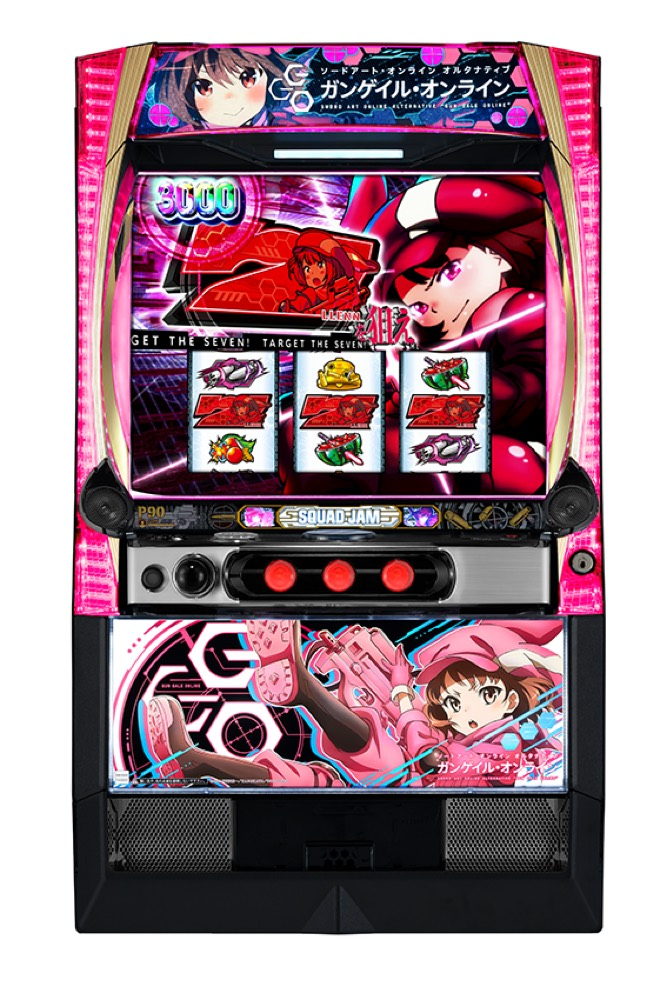

Lソードアート・オンライン オルタナティブ ガンゲイル・オンライン
BONUSを重ね、SQUAD JAMと上位STへ。
- 導入
- 2026年11月
- メーカー
- 京楽／オッケー.
- 分類
- パチスロ
主要スペック
2026年11月2日から順次導入が始まったスマスロ。設定別の初当り・SQUAD JAM確率を使い、BONUS、ST、GGOストーム、上位ST『イカれたレン』までを簡易体験できます。
- 初当りは設定1約1/192.0〜設定6約1/153.9
- SQUAD JAMは設定1約1/521.7〜設定6約1/392.6
- BONUS純増約3.4枚/G・上乗せBONUS約7.1枚/G
Lソードアート・オンライン オルタナティブ ガンゲイル・オンラインの見どころと計算条件
2026年11月2日から順次導入が始まったスマスロ。設定別の初当り・SQUAD JAM確率を使い、BONUS、ST、GGOストーム、上位ST『イカれたレン』までを簡易体験できます。
スマスロ GGOを数字で早分かり
初当りBONUSからSQUAD JAM、イカれたレンまでの流れと、設定ごとの結果差を固定レートで比較できます。
30秒で分かるスマスロ GGO
初当りBONUSは比較的軽めですが、メインSTのSQUAD JAMは設定1で約1/521.7です。BONUS当選とST到達を分けて見ることで、初当りの早さだけでは測れない収支の幅を確認できます。
こんな遊び方に向いている
- BONUSからSTへ進む二段階の流れを試したい
- 設定差が大きいSQUAD JAM初当りを比べたい
- GGOストームから上位ST到達を目指したい
遊ぶ前に確認したいこと
- 初当り約1/192.0とSJ約1/521.7は別の指標
- CZのモードやスルー回数は個別再現しない
- 設定1基準の平均SJ投資目安は約18,300円
初当りとSQUAD JAMの設定差
初当り合算は設定1約1/192.0から設定6約1/153.9、ST『SQUAD JAM』は設定1約1/521.7から設定6約1/392.6です。
START時に設定1〜6を均等抽選し、選ばれた設定の初当り・SQUAD JAM・出玉率を使用します。結果と機種別ランキングにも設定を表示します。
CZイエスマムとBONUS
CZ『イエスマム』は10G＋αで、成功期待度は約50%です。BONUSはREGが20G・約70枚、BIGが40G・約130枚で、純増は約3.4枚/Gです。
サイトでは通常時の直撃やCZを初当りBONUSへまとめます。CZの特訓回数、モード、スルー回数は個別再現しません。
SQUAD JAMと上乗せBONUS
SQUAD JAMはバトル勝利で上乗せを目指すSTです。上乗せ分を払い出すガンゲイルBONUSは純増約7.1枚/Gです。
シミュレーターではバトルと上乗せを追加枚数抽選へまとめ、1回の流れを短時間で確認できる構成にしています。
GGOストームから上位STへ
エンディング後などの有利区間リセット時はGGOストームを経由し、上位ST『イカれたレン』を目指します。
上位到達率や継続率の全詳細は公開値が揃っていないため、サイト共通の固定抽選で簡易化し、実機値と区別します。
固定レートと収支の条件
- 約31G/50枚・1,000円46枚貸し・5.2枚交換で固定
- 設定1基準の平均SQUAD JAM投資目安は約18,300円
- コイン単価は設定1の参考値約3.5円として表示
- 19,000枚到達時はコンプリート表示
平均Gと投資目安の計算
掲載するSQUAD JAM初当り約1/521.7は設定1基準です。当サイトでは50枚あたり31G、1,000円46枚貸しの固定条件から、設定1基準の平均投資目安を約18,300円と計算します。
シミュレーターでは設定1〜6を均等抽選します。設定1〜6で公開されている初当り値を個別に使います。公開されていない特化ゾーン・上位到達率の設定差は加えません。 換金は5.2枚交換で固定し、結果とランキングに設定を表示します。
シミュレーション結果の見方
当るまで初当りBONUS・SQUAD JAMまでのゲーム数
設定設定1・2・3・4・5・6から抽選された今回の設定
上位到達GGOストームとイカれたレンへの到達
最終収支差枚と5.2枚交換の収支目安
結果は自動で「マイ記録」に保存され、同じ機種を何回試したか、最高収支、勝率をあとから確認できます。
簡易シミュレーターについて
初当りBONUS・SQUAD JAM・イカれたレンの流れを固定条件で体験できます。JavaScriptを有効にすると、この位置にシミュレーター、演出、マイ記録、機種別ランキングが表示されます。
結果は娯楽・確率理解のための参考表示です。金銭的価値や交換価値はなく、実際の勝敗や収支を保証しません。18歳未満の方の利用はお控えください。
スマスロ GGOのよくある質問
スマスロ GGOはどんな台？
2026年11月2日から順次導入が始まったスマスロ。 初当りは設定1約1/192.0〜設定6約1/153.9が主な確認ポイントです。
スマスロ GGOの平均投資目安は？
設定1基準のSQUAD JAM初当り約1/521.7と、50枚あたり31G・46枚貸しの固定条件から、平均18,300円を目安として表示します。実際の設定や遊技状況で結果は変わります。
設定とゲームの流れはどう抽選する？
開始時に設定1・2・3・4・5・6から1つを均等抽選し、初当りBONUS、SQUAD JAM、GGOストーム、イカれたレンの順で到達を判定します。設定は最終結果とランキングに表示します。
収支はどう計算する？
1,000円46枚貸し・5.2枚交換の固定条件で投資、換金、収支目安を計算します。実店舗の再プレイ、持ちメダル、端数処理は含みません。